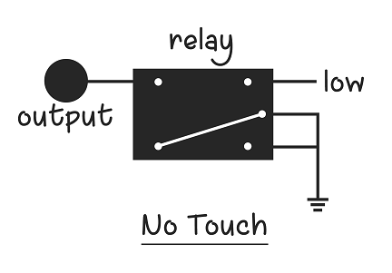
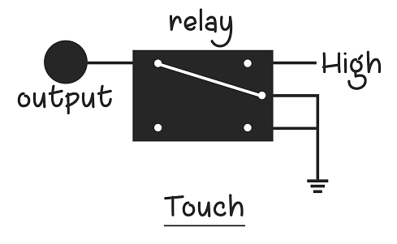

Touch Simulation
Simulating touch is one of the critical parts of any game. There are multiple ways in which we can simulate the touch.
Mechanical
The touch can be simulated by a mechanical system consisting of a stylus connected to servo motor. A typical servo motor is a rotatory actuator that allows precise control of angle. The stylus must be connected to the servo in such a way that when the servo rotates, the stylus hits the screen.
This is the code that you can use to control the touch in this case. Let us assume that the mechanical arrangement is adjusted in such a way that the angle when the stylus touches the screen is 0 degrees and that the stylus doesn't touch the screen for 30 degrees.
// import the servo motor library
#include <Servo.h>
Servo myservo; // create servo object to control a servo
void setup()
{
myservo.attach(9); // attaches the servo on pin 9 to the servo object
}
void loop()
{
// below are the angles for touching
// 0 - touch, 30 - no touch
myservo.write(30); // simulate no touch
delay(1000);
myservo.write(0); // simulate touch
delay(1000);
}
But the problem with this method is that it is relatively slow. It is constrained by the speed of servo movement. To overcome this problem, we can use one of the following two ways.
Using Relay
This and the next method can only work on capacitive touch screens. For this we have to understand how they work. The electrodes apply a low voltage to the conductive layer creating a uniform electrostatic field. When a finger hits the screen a tiny electrical charge is transferred to the finger to complete the circuit creating a voltage drop at that point on the screen. The location of this voltage drop is recorded by the controller.
Fig: Depiction of how touch screen works. Credit for image: The Curious Engineer, YouTube
We are going to use this concept, except that in the place of a finger, we use the ground pin on the arduino to transfer the charge on the screen. To have more surface area on the display of the screen, we use a coin. Relays are directly connected to the output pin of the Arduino. As shown in the figure, it is equivalent to a touch if the voltage given is high as there is a path for the current to flow to the ground. It is equivalent to not touching, if the voltage given is low.
 
Here's how you have to connect the relay in a circuit to simulate touch.
Here's the code to simulate touch and no touch alternatively with a time period of two seconds.
void setup()
{
pinMode(4, OUTPUT);
}
void loop()
{
// below are the values for touching
digitalWrite(4, HIGH); // simulate no touch
delay(1000);
digitalWrite(4, LOW); // simulate touch
delay(1000);
}
Touch simulation on screen
Here's how the touch circuit can be placed on the top of the screen.
We should also make sure that there is enough contact between the wire from the output of the relay and the surface of the screen. Hence, we can use a coin or aluminium foil for this purpose.
Debugging
I must concede that getting the touch to work at first it hard. While using this circuit, try to have your phone in developer mode and tuen on the setting that says show touches and pointer location, so that you exactly understand when and where the screen is being touched.
If you circuit doesn't work directly, it's probably because the ground of your mobile and that of the circuit do not match. For overcoming this diffculty, you can try the following: make sure your circuit is not placed on an iron conductor, change the material used to increase the surface area of touch, try to plug both your circuit and the mobile into USB ports from the same computer, etc.,
Using Transistors
This method can work faster than a relay too. You have to use a transistor in place of a relay for switching between open circuit and ground. The code would be the same as above.